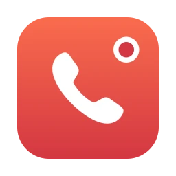

Cornetta
Registra le chiamate dal Mac, con qualunque app: WhatsApp, FaceTime, Meet, Zoom, Teams. La tua voce e quella delle altre persone, in un solo file.
Stai guardando la pagina dal telefono. Cornetta funziona sul Mac: apri questo link dal computer.
Installazione
Quattro passi, circa due minuti. Si fa una volta sola.
-
Scarica
Premi il tasto rosso. Il file Cornetta.dmg finisce nella cartella Download.
0:10 -
Trascina in Applicazioni
Apri Cornetta.dmg dalla cartella Download. Si apre una finestra con l'icona rossa di Cornetta e la cartella Applicazioni: trascina l'icona sulla cartella.
0:20 -
Sblocca il primo avvio
Apri Cornetta da Applicazioni. macOS mostra un avviso e non la apre: succede con le app gratuite che non passano dall'App Store. Premi Fine, non spostarla nel Cestino.
Apri Impostazioni di Sistema › Privacy e sicurezza, scorri in fondo e premi Apri comunque. Conferma con la password del Mac.
Serve solo la prima volta. Gli aggiornamenti poi si installano da soli.
1:00 -
Dai i due permessi
Alla prima registrazione Cornetta chiede il Microfono, per la tua voce, e la Registrazione audio di sistema, per la voce degli altri. Premi Consenti a tutti e due.
0:15
Come si usa
-
Registra
Cornetta vive in alto a destra, nella barra dei menu, con l'icona di una cornetta. Premi l'icona e scegli Avvia registrazione, oppure ⌘ R.
-
Quando parte una chiamata
Se un'app inizia a usare il microfono, Cornetta lo nota e chiede se vuoi registrare. Un clic su Registra e parte.
-
Ferma e ritrova il file
Durante la registrazione un pannello in alto a destra mostra il tempo e i livelli delle voci. Premi Ferma: il file si salva in Musica › Cornetta.
-
Gli aggiornamenti arrivano da soli
Quando esce una versione nuova compare un avviso Aggiornamento disponibile. Premi Aggiorna ora: in pochi secondi Cornetta si riapre aggiornata.
-
Qualcosa non va? Dillo
Premi Feedback nel pannello o nel menu e scrivi cosa è successo. Il messaggio arriva direttamente a chi sviluppa Cornetta.